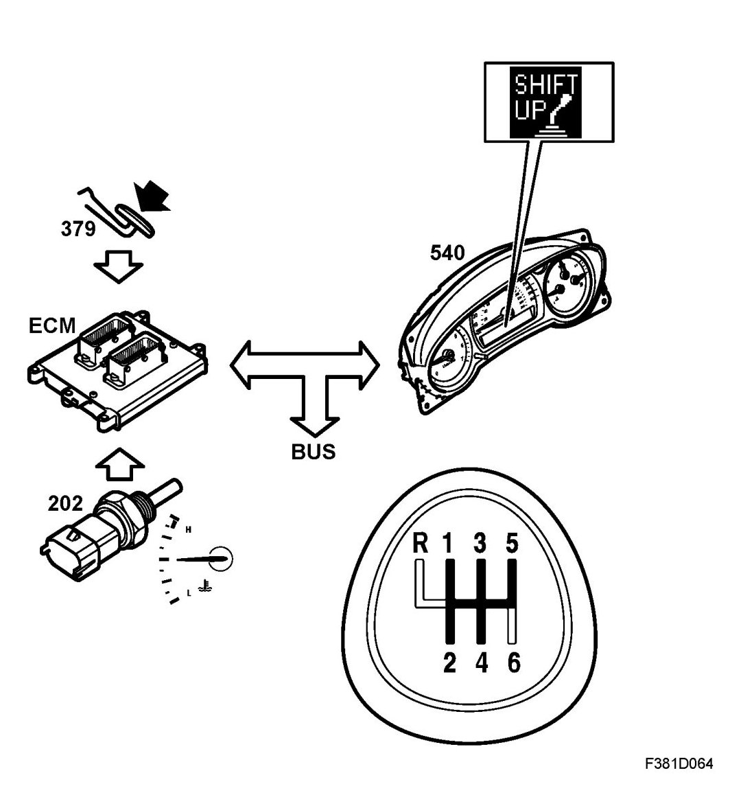

Shift-Up Indication
Shift-up Indication

General
Upchange indication is a function which should give the driver a discreet indication that it may be time to change up a gear so as to reduce the car's fuel consumption. However, note that it is not always appropriate to follow the recommendations of the indication, e.g. in dense urban traffic, etc.
Depending on the driver's driving style and knowledge of lean driving, fuel consumption is affected to a greater or lesser extent. It is normally reduced, but a very skilled driver can drive more fuel efficiently without upchange indication.
Function
Upchange indication is active only when the engine has been warmed up slightly, because the warmup time of the catalytic converters is shorter if the engine operates at higher speeds.
When running in gear 1-2-3-4-5, the upchange indication comes on when you can use the next gear up to achieve the same acceleration. The illumination of the upchange indication has a specific hysteresis and is slightly delayed to prevent the lamp flashing.
After changing down to gear 2-3-4-5, the illumination of upchange indication is delayed by 10 seconds.